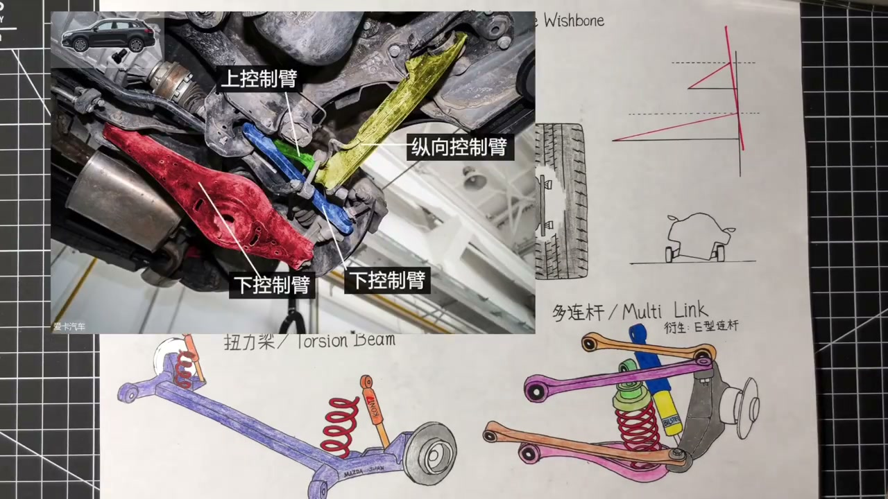
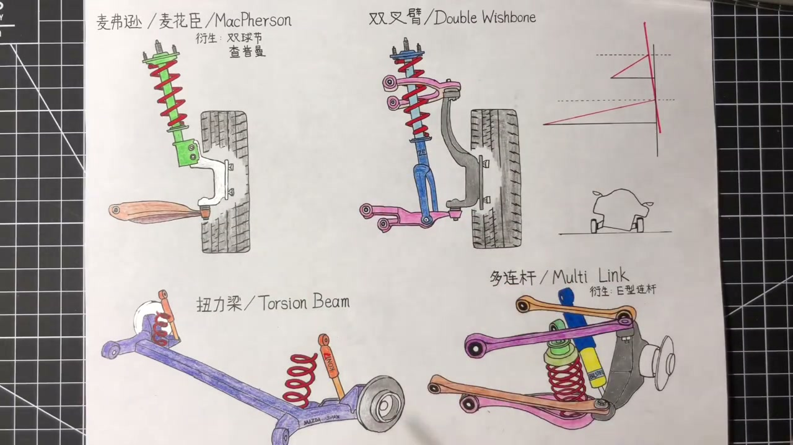
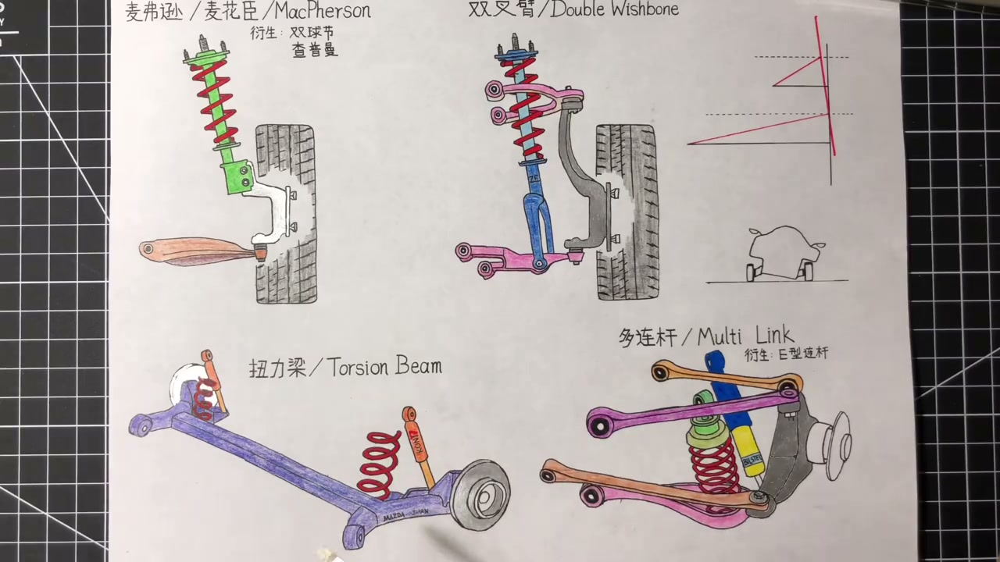
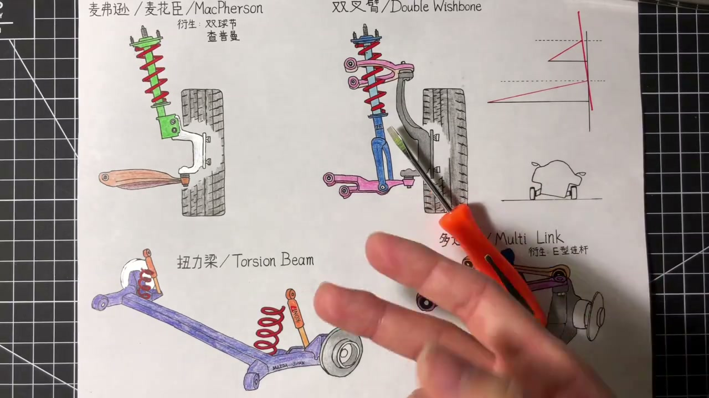
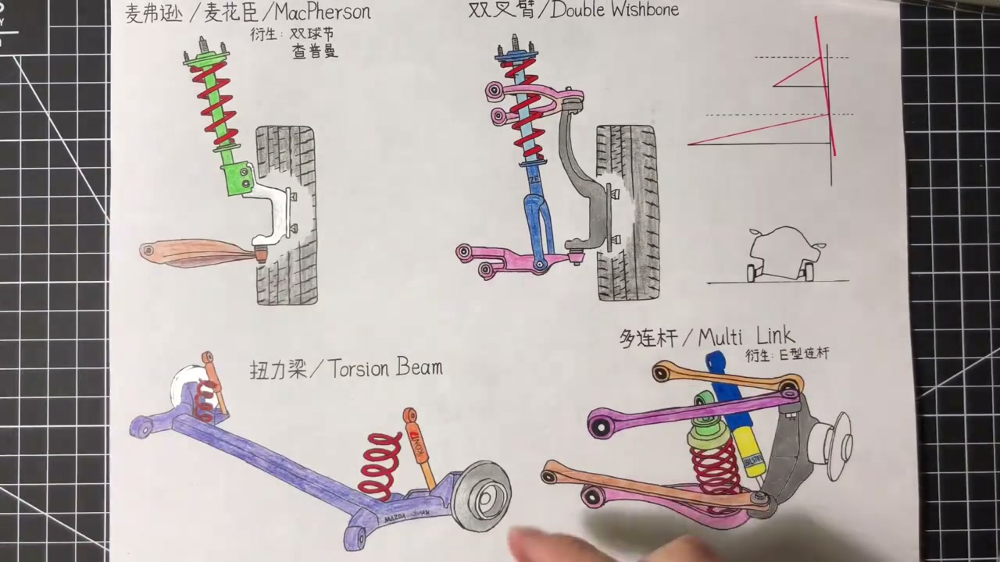

01
中文
多连杆可以看作双叉臂的升级版，拥有双叉臂的所有优点。
EN
Multi-link is an upgraded wishbone—all the same strengths, plus more.
表达提示multi-link（多连杆）

Scene English · 汽车 · 悬架
Suspension Types (2): Multi-Link and Torsion Beam
🎧 语音讲解
Multi-Link: The Wishbone Upgrade
情境多连杆可以看作双叉臂的升级版，拥有双叉臂所有优点，对轮子控制更优。双叉臂是一个人两只手打伞，两手的方向位置受限；多连杆是两个人各用一只手打伞，布局自由很多，分担一份工作更游刃有余。前后都能用。
多连杆可以看作双叉臂的升级版，拥有双叉臂的所有优点。
Multi-link is an upgraded wishbone—all the same strengths, plus more.
表达提示multi-link（多连杆）
如果说双叉臂是一个人两只手打伞，多连杆就是两个人各用一只手打伞，布局自由很多。
If the wishbone is one person with two hands, multi-link is two people with two hands.
表达提示more freedom（更自由）
连杆数量不同车型不同，有三连杆、四连杆、五连杆，连杆越多表现越好。
Link counts vary—three, four, five—and more links generally perform better.
表达提示link count（连杆数量）
multi-link（多连杆
more freedom（更自由

The 'Integral Link' Is a 4-Link
情境异形连杆听着高大上，其实就是四连杆的一种，多用于后轮。三根横向连杆一上两下控制住轮子，再加一根纵向连杆加强悬挂强度，三横一竖，性价比高，在成本不变的前提下有效提高悬挂表现。
异形连杆听名字好像很高深，实际上它就是四连杆的一种，多用于后轮。
The 'integral link' sounds fancy, but it's just a four-link used at the rear.
表达提示integral link（异形连杆）
三根横向连杆一上两下控制轮子，再加一根纵向连杆加强强度，就是三横一竖。
Three lateral links plus one longitudinal one—three across, one fore-aft.
表达提示lateral（横向的）
在成本不动的前提下，它有效提高了悬挂的表现，性价比比较高。
It lifts performance at little cost—great value.
表达提示value（性价比）
integral link（异形连杆
lateral（横向的

Five Links: The Ceiling
情境民用车型多连杆的极限在五连杆。具体布局没有一定之规，取决于车的定位，工程师会根据想要的悬挂动态设计调教五根连杆的位置、角度和尺寸。真要细说就要做受力分析了，大家知道五连杆最牛就行。
民用车型的多连杆极限就在五连杆了。
Five links are about the practical ceiling for road cars.
表达提示ceiling（天花板）
布局没有一定之规，取决于车的定位，工程师会设计每根连杆的位置角度尺寸。
There's no fixed layout—engineers tune each link's position, angle, and size.
表达提示position and angle（位置与角度）
真要细说就要开始做受力分析了，大家只需要知道五连杆是最牛的。
A full breakdown means force analysis; just know five links is the best.
表达提示force analysis（受力分析）
ceiling（天花板
position and angle（位置与角度

The Torsion Beam Structure
情境扭力梁也叫拖曳臂悬挂。它非常简单粗暴：几根铁板焊在一起的一个整体，两边的轮子直接硬连接安装上去，不涉及任何连杆摆臂，再在两边布置弹簧和避震。运动时以两个固定在车身上的点为轴心上下的运动。
扭力梁简单粗暴：就是几根铁板焊在一起的一个整体。
A torsion beam is brutally simple: several steel plates welded into one unit.
表达提示welded（焊接的）
两边的轮子直接硬连接装上去，不涉及任何连杆摆臂。
The wheels bolt on directly—no links, no arms at all.
表达提示bolt on（直接安装）
它运动起来以两个固定在车身上的点为轴心，这样上下运动。
It pivots on two body mounts, moving up and down.
表达提示pivot（轴心转动）
welded（焊接的
bolt on（直接安装

Why It's 'Semi' Independent
情境扭力梁看似整体一起上下动，但其实这根梁是有韧性的、会扭动。一个轮子往上提一个往下压时，梁通过自身扭曲变形完成两个轮子不同方向的运动。说它完全非独立不对（两个轮子可以不同方向动），说它独立也不对（轮子间并不独立），所以叫半独立。
虽然扭力梁看似一个整体，但这根梁是有韧性的，它是会扭动的。
It looks solid, but the beam is flexible—it can twist.
表达提示twist（扭转）
一个轮子往上提一个往下压时，梁通过自身扭曲变形完成两个轮子不同方向的运动。
Lift one side and push the other, and the beam twists to allow opposite motion.
表达提示opposite motion（相反方向的运动）
说它完全非独立不对，说它独立也不对，所以就有了半独立的说法。
Not fully rigid, not truly independent—hence 'semi-independent'.
表达提示semi-independent（半独立）
twist（扭转
opposite motion（相反方向的运动

Torsion Beam: The Pluses
情境扭力梁优点：第一非常便宜，一整块铁板两个螺丝固定一切，零件和安装人工都便宜；它拧的过程和防倾杆工作原理重叠，很多时候防倾杆就不装了又省一笔；后期保养除了两个衬套老化，没有其他会坏的地方。第二结构平坦，最大程度腾出后备箱或后排空间。
第一个优点就是便宜：一整块铁板两个螺丝固定一切，零件安装都便宜。
First, it's cheap: one steel assembly, two bolts—parts and labor are minimal.
表达提示cheap（便宜）
它的扭转过程和防倾杆原理重叠，很多时候防倾杆就不装了，又省一笔。
Its twisting mimics an anti-roll bar, which can be skipped entirely.
表达提示anti-roll bar（防倾杆）
结构平坦，能最大程度腾出后备箱或后排的空间。
It's flat, maximizing trunk and rear-seat room.
表达提示flat（平坦的）
cheap（便宜
anti-roll bar（防倾杆

Torsion Beam: The Minuses
情境缺点：第一毕竟不是独立悬挂，舒适性和操控性都大打折扣；第二完全不能做四轮定位调节，轮子和扭力梁硬连接、扭力梁和车身硬连接，原厂四轮定位什么样就永远什么样，想改装基本没什么可做的，只能改短簧避震。
毕竟它不是独立悬挂，从舒适性还是操控性考量都会大打折扣。
Being non-independent, comfort and handling both take a hit.
表达提示take a hit（打折扣）
这套后悬挂完全不能做四轮定位的调节。
The rear can't be aligned at all.
表达提示alignment（四轮定位）
轮子和梁硬连接，梁和车身硬连接，原厂什么样就一直什么样。
Wheels to beam, beam to body—all rigid, so factory settings are permanent.
表达提示factory settings（原厂设定）
想改装的话只能改短簧和避震，外倾角后倾角什么都改不了。
Modders can only swap springs and shocks—no camber or caster changes.
表达提示springs and shocks（短簧和避震）
take a hit（打折扣
alignment（四轮定位

How to Choose
情境笼统来说独立好于半独立，连杆多的好于连杆少的：多连杆略好于双叉臂，双叉臂好于麦弗逊。买菜车给多连杆开不出区别还徒增维修费，不如前麦弗逊后扭力梁简单便宜。对运动有要求的朋友扭力梁肯定没法看。调教好的麦弗逊也值得拥有，悬挂种类名称眼花缭乱，但万变不离其宗。
独立的好于半独立的，连杆多的好于连杆少的。
Independent beats semi-independent; more links beat fewer.
表达提示more is better（越多越好）
买菜车给多连杆开不出区别，还徒增后区的维修保养费用。
A grocery-getter can't tell a multi-link from a beam—it just raises maintenance bills.
表达提示grocery-getter（买菜车）
不如老老实实前麦弗逊后扭力梁，买来便宜保养便宜，还轻还省空间。
A strut-and-beam combo is cheaper, lighter, and roomier.
表达提示struts and beams（麦弗逊加扭力梁）
悬挂名字让人眼花缭乱，但万变不离其宗，都是这四种的改良和衍生。
Names dazzle, but every setup is a variant of these four families.
表达提示variants of four（四种形式的衍生）
more is better（越多越好
grocery-getter（买菜车
说多连杆
说异形连杆
说扭力梁结构
说半独立原因
说扭力梁优点
说怎么选
买菜车多连杆开不出区别。
扭力梁是半独立。
扭力梁不能四轮定位。
扭力梁自带防倾功能。
万变不离其宗。